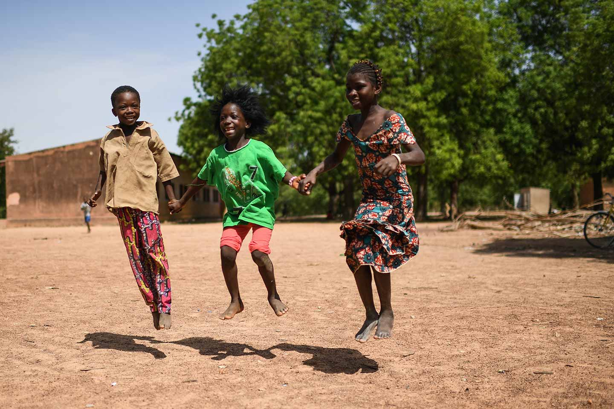

ABOUT ForAll

As the COVID-19 crisis continues to loom over us, The Government of India has taken a strict combat measure by directing a lockdown of the entire nation. At this great hour of need, ForAll has stepped in to provide relief by providing food to thousands of people across the country.
By adhering to all safety and hygiene measures, ForAll has begun its relief service by providing meal or packed grocery kits to the marginalised and low-income segment of the society comprising of daily wage workers, migrant labourers, construction site workers, and needy people at old age homes and night shelters.
Presently,ForAll is providing food relief in, Rajasthan, Karnataka, Telangana, Gujarat, Maharashtra, NCR, Uttar Pradesh, Andhra Pradesh, and many more.